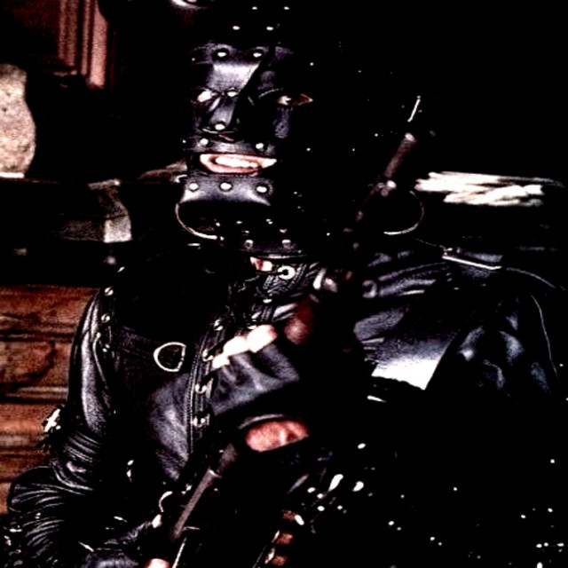

Click to Enter
Windows Media Player
_
□
×
File
View
Play
Tools
Help
:3
stay with me
GOAT
everyday the same shit
/egin/
_
□
×
F
ile
E
dit
V
iew
F
a
vorites
T
ools
H
elp
Back
Search
Folders
Address
C:\Users\egin\
Go
File and Folder Tasks
Make a new folder
Publish to Web
Share this folder
Other Places
Desktop
My Documents
My Computer
My Network
Details
egin
File Folder
Modified: Today
klynt
vpc

rifle
3 objects
My Computer
 everyday the same shiteveryday the same shit
everyday the same shiteveryday the same shit